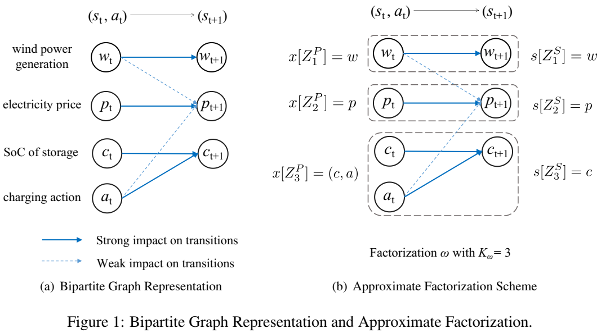
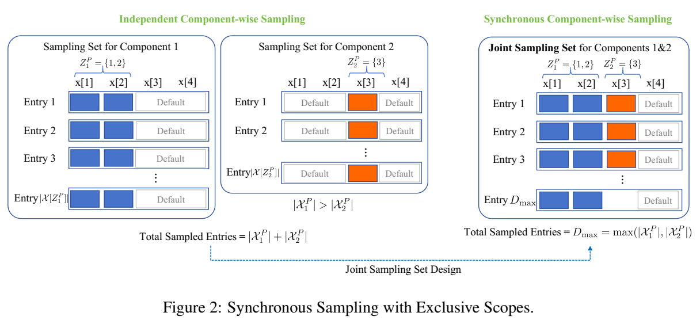

摘要
众所周知，强化学习（RL）算法存在维数灾难，这是指大规模问题往往导致样本复杂度呈指数级增长。常用解决方案是使用深度神经网络进行函数近似。然而，这种方式通常缺少理论保障。为了理论性地解决维数诅咒，我们观察到，许多真实世界问题显示出特定任务的结构，当适当利用时，可以改进RL的样本效率。基于这种见解，我们提出通过将原始马尔可夫决策过程（MDP）近似分解到较小的、独立演化的MDPs 来解决维数诅咒。这种因子分解使得在基于模型和无模型的环境中开发样本高效的RL算法成为可能，后者涉及方差减少的Q学习变体。我们为这两种提出的算法提供了改进的样本复杂度保证。值得注意的是，通过MDP的近似因式分解利用模型结构，样本复杂性对状态动作空间大小的依赖性可以呈指数级降低。从数值上讲，我们通过在合成MDP任务和配备风电场的储能控制问题上的实验证明了我们提出的方法的实用性。论文地址
引言
近年来，强化学习已经成为未知环境中解决序列决策问题的流行框架，应用在不同领域，如机器人（Kober等，2013）、运输（Haydari & Yilmaz,2020），功率系统（Chen等，2022），和金融市场（Charpentier等，2021）。尽管显著进展，维数诅咒人仍是RL任务中的主要瓶颈（Sutton & Barto，2018）。具体地，样本复杂度与环境的状态动作空间的维度几何增长，对大规模应用提出挑战。例如，在机器人控制中，即便为单个及其人增加多一个自由度将显著提升控制问题的复杂性（Spong等，2020）。
为了克服样本复杂度的维数诅咒，常用方式是结合函数近似来使用预定义的函数类（如，神经网络）（SUtton & Barto，2018）来近似值函数或策略。随着这种方法在特定应用中工作，这些方法严重依赖函数近似类的设计，裁剪参数微调和其他经验观点。而且，它们通常缺少理论保证。据我们所知，大多数现有的结果局限在具有线性函数近似（Tsitsiklis & Van， 1996；Bhandari等，2018；Srikant & Ying，2019；Chen等，2023）的基础设置。少数例外使用非线性近似（如，神经网络）（Fan等，2020；Xu & Gu, 2020），通常需要为理论分析量身定制的额外假设，这与实际算法产生了差距。因此，在RL中，实现大规模顺序决策问题的可证明样本效率仍然是一个重大挑战（Sutton和Barto，2018）。
形式上，RL问题通常建模为MDP，其中环境由未知转移核和奖励函数表示。重要的是要注意，在许多真实世界应用中，转移概率和奖励函数表现出固有的因子结构，若利用适当，将减轻在样本复杂度中的维数诅咒。作为示例，考虑基于模型的RL，其中维数诅咒转变为评估转移概率（潜在高维度）的挑战。为解决这种挑战，幸运地是，一些部分依赖结构普遍存在于像可持续性努力（Yeh等人，2023）、排队系统（Wei等人，2024）和网络系统（Qu等人，2020）等应用中。具体地，当前状态动作对和下一状态之间的转移依赖不是全连接的，下一状态通常仅依赖于当前状态动作变量的一个子集。例如，在电力系统控制中，电力需求的动态虽然是随机的，但与发电决策无关。类似的，在多代理机器人控制任务中，一个机器人的动作通常不影响其他地理位置遥远的，允许更加局部化和稀疏性的建模和方案。通过在算法设计中识别和利用这些架构，可能显著减少样本复杂度。
一个值得注意的捕捉这种思想的框架是因子分解MDP框架（Osband & Van，2014），其中，原始MDP分解为较小和独立演化的MDPs的集合。此时，整体样本复杂性取决于每个独立DMP的状态动作空间的大小的和（而不是积）。因此，问题大小不再随着问题维度指数缩放，成功地克服了维数诅咒。虽然因子分解MDP框架看起来是一个由前景的方法，它依赖于原始MDP可以完美因子化到一组较小MDPs的假设。这种结构性假设限制了因子分解MDP方法的应用。此外，据我们所知，没有用于因子分解MDP设置的可证明的无模型算法，限制了不需要显式估计环境模型的更加灵活的方法的发展。
贡献
本文中，我们通过提出一种分解MDP到低纬组分的近似分解范式移除了因子分解MDP框架的限制。该方案可以视为因子分解MDP的扩展框架，允许不完全的因子分解模型。构建在这种框架之上，我们开发了可证明的RL算法，用于克服维数诅咒，并相较于先前基于模型和无模型范式的工作取得改进的样本效率。主要贡献总结如下。
MDP的近似因子分解和高效采样 为了解决维数诅咒，我们引入一种近似因子分解的方案，可以灵活分解任意MDP到低纬度组分。该方案通过识别和利用环境模型中的依赖结构，为因子分解操作提供了更大的灵活性，以在样本复杂性和最优性之间找到最佳权衡。使用这些近似因子分解MDPs，我们提出一个多组分因子分解同步采样方法来估计模型，塑造为一个成本优化图着色问题。使用这些近似因子化的MDP，我们提出了一种多分量因子化同步采样方法来估计模型，将其框架化为成本最优的图着色问题 。这种方法允许从单个样本中同时采样多个成分，这与之前的分解MDP方法不同，在之前的分解方法中，每个样本只估计一个成分的转变。这种采样方法是降低我们基于模型和无模型算法中样本复杂性的关键。
基于模型的近似因子分解算法 我们开发了一个新颖的基于模型RL算法，利用提出的同步采样方法，并完全利用由近似因子分解识别的低纬度结构。通过分解大型核估计为较小、可管理组分，我们的算法取得可证明的问题依赖的采样复杂性（定理5.1），超越现有标准MDPs的最小最大最优界限（Azar等，2012）。此外，我们的方法推广了分解式 MDP 框架，当应用于这种设置时，可以以多达组件数量的倍数改进最著名的样本复杂度 (Chen et al., 2020) 。关键的技术挑战是解决同步采样和因子化采样中样本之间的统计相关性。在方差分析中，通过控制这些相关性，我们将依赖于组分大小的样本复杂度减少到依赖于最大组分。
采用近似因式分解的无模型方差缩小 Q 学习 我们提出一种无模型方法，采用近似因子分解的方差缩小Q学习（VRQL-AF），其结合同样的同步采样方法。它取得于我们基于模型方法（取决于对数项）相同得问题依赖采样复杂度保证（定理 6.1），超越现有标准MDPs得最小最大最有算法（Wainwright,2019b）。当应用于因子化MDPs(我们设置中得特例)，据我们所知，VRQL-AF是第一个可证明的取得近似最优样本复杂性保证的无模型算法。改进结果来自我们为近似因子化MDP量身定制的因子化经验Bellman算子，并与变量推导方法相结合，以最小化随机迭代算法的方差。这种集成需要精细的统计分析，以严格控制多因子组件的估计误差和迭代方差。
相关工作
我们的工作得益于RL社区中一些关键文献。我们依次讨论如下。
基于模型算法的有限样本分析 我们提出的算法（算法2）遵循基于模型的RL方法，其中学习过程设计模型评估和规划。基于模型的方法已被大量研究（Azar等，2012；Agarwal等，2020；Gheshlaghi等，2013；Sidford等，2018；Azar等，2017；Jin等，2020），在生成模型设置中（Li等，2020），取得 O ( ∣ S ∣ ∣ A ∣ ϵ − 2 ( 1 − γ ) − 3 ) \mathcal{O}(|\mathcal{S}||\mathcal{A}|\epsilon^{-2}(1 - \gamma)^{-3}) O ( ∣ S ∣∣ A ∣ ϵ − 2 ( 1 − γ ) − 3 )
无模型算法的有限样本分析 我们提出的算法还对齐无模型RL，其不估计模型，而是直接优化策略（Sutton & Barto，2018）。大量文献关注Q学习（Tsitsiklis，1994；Jaakkola等人，1993；Szepesvári，1997；Kearns和Singh，1998；Even-Dar等人，2003；Wainwright，2019a；Chen等人，2024a；Li等人，2024），采用不同的采样设置，证明了最小最大样本复杂度 O ~ ( ∣ S ∣ ∣ A ∣ ϵ − 2 ( 1 − γ ) − 4 ) \tilde{\mathcal{O}}(|\mathcal{S}||\mathcal{A}|\epsilon^{-2}(1 - \gamma)^{-4}) O ~ ( ∣ S ∣∣ A ∣ ϵ − 2 ( 1 − γ ) − 4 ) O ~ ( ∣ S ∣ ∣ A ∣ ϵ − 2 ( 1 − γ ) − 3 ) \tilde{\mathcal{O}}(|\mathcal{S}||\mathcal{A}|\epsilon^{-2}(1 - \gamma)^{-3}) O ~ ( ∣ S ∣∣ A ∣ ϵ − 2 ( 1 − γ ) − 3 )
因子化MDPs 我们的模型推广了因子MDP的框架（Boutilier等人，19951999），并将其扩展到考虑近似误差。关于因子MDP的大多数现有工作都是在情景框架中进行的，主要分析后悔表现（Guestrin等人，2003；Osband和Van Roy，2014；Xu和Tewari，2020；Tian等人，2020；Chen等人，2020）。特别是，最先进的结果转化为 O ~ ( ∑ k = 1 K ∣ X k ∣ ϵ − 2 ( 1 − γ ) − 3 ) \tilde{\mathcal{O}}(\sum_{k=1}^{K}|\mathcal{X}_k|\epsilon^{-2}(1 - \gamma)^{-3}) O ~ ( ∑ k = 1 K ∣ X k ∣ ϵ − 2 ( 1 − γ ) − 3 ) ∣ X k ∣ |\mathcal{X}_k| ∣ X k ∣ O ~ ( max k ∣ X k ∣ ϵ − 2 ( 1 − γ ) − 3 ) \tilde{\mathcal{O}}(\text{max}_k|\mathcal{X}_k|\epsilon^{-2}(1 - \gamma)^{-3}) O ~ ( max k ∣ X k ∣ ϵ − 2 ( 1 − γ ) − 3 )
具有函数近似的 RL 为了使RL问题样本对大规模问题有效，一种常见的方法是采用函数近似（Sutton和Barto，2018）。直观地说，关键思想是将RL问题的搜索空间限制在预定义的函数类中，其中每个函数都可以用低维参数指定。这种方法取得了显著的实证成功（Mnih等人，2015；Silver等人，2017）。然而，具有函数近似的RL在理论上并没有得到很好的理解，除非在近似函数类的强结构假设下，例如函数类是线性的（Tsitsiklis和Van Roy，1996；Bhandari等人，2018；Srikant和Ying，2019；Chen等人，2023，2024b），满足Bellman完备性（Fan等人，2020），或其他（Dai等人，2018，Wang等人，2020年）。此外，函数近似通常以近似Q值为目标，而不是利用固有的转移核和奖励函数结构。在这项工作中，我们采用了一种不同的方法，利用近似因式分解结构，而不是实现函数近似 。同样值得注意的是，我们的方法非常灵活，可以通过结合函数近似技术进一步扩展，为解决大规模RL问题提供了一个更广泛的框架。
模型和背景
考虑一个有限视野的折扣MDP M = ( S , A , P , r , γ ) M = (S,A,P,r,\gamma) M = ( S , A , P , r , γ ) P ( s ′ ∣ s , a ) P(s'|s,a) P ( s ′ ∣ s , a ) S × A → [ 0 , 1 ] S \times A \rightarrow [0,1] S × A → [ 0 , 1 ] γ ∈ ( 0 , 1 ) \gamma \in (0,1) γ ∈ ( 0 , 1 )
在每个时间步，代理基于当前环境状态采取行动，根据转移概率随机转换到下一个状态，并接收一次性奖励。该过程重复，代理的目标是找到一个最有策略，进行动作选择，从而最大化长期折扣累积奖励。更加正式地，策略 π \pi π π \pi π Q π ∈ R ∣ S ∣ ∣ A ∣ Q^{\pi} \in R^{|S||A|} Q π ∈ R ∣ S ∣∣ A ∣ Q π ( s , a ) = E π , P [ ∑ t = 0 ∞ γ t r ( s t , a t ) ∣ s 0 = s , a 0 = a ] Q^{\pi}(s,a) = E_{\pi,P}[\sum_{t=0}^{\infty} \gamma^t r(s_t,a_t) | s_0 = s, a_0 = a] Q π ( s , a ) = E π , P [ ∑ t = 0 ∞ γ t r ( s t , a t ) ∣ s 0 = s , a 0 = a ] ( s , a ) ∈ S × A (s,a) \in S \times A ( s , a ) ∈ S × A E π , P [ ⋅ ] E_{\pi,P}[\cdot] E π , P [ ⋅ ] π \pi π s t + 1 ∼ P ( ⋅ ∣ s t , a t ) , a t + 1 ∼ π ( ⋅ ∣ s t + 1 ) s_{t+1} \sim P(\cdot | s_t,a_t), a_{t+1} \sim \pi(\cdot | s_{t+1}) s t + 1 ∼ P ( ⋅ ∣ s t , a t ) , a t + 1 ∼ π ( ⋅ ∣ s t + 1 ) t ≥ 0 t \ge 0 t ≥ 0 π ⋆ \pi^{\star} π ⋆ ( s , a ) ∈ S × A (s,a) \in S \times A ( s , a ) ∈ S × A
求解MDP的核心是贝尔曼最优方程，其指出，最有Q函数，表示为 Q ⋆ Q^{\star} Q ⋆ R ∣ S ∣ ∣ A ∣ → R ∣ S ∣ ∣ A ∣ R^{|S||A|} \rightarrow R^{|S||A|} R ∣ S ∣∣ A ∣ → R ∣ S ∣∣ A ∣
[ H ( Q ) ] ( s , a ) = E s ′ ∼ P ( ⋅ ∣ s , a ) [ r ( s , a ) + γ m a x a ′ ∈ a Q ( s ′ , a ′ ) ] , ∀ ( s , a ) ∈ S × A . [\mathcal{H}(Q)](s,a) = E_{s^{'}\sim P(\cdot|s,a)}\left[r(s,a) + \gamma\underset{a^{'}\in a}{max}Q(s^{'},a^{'})\right]\,, \quad\forall(s,a) \in S \times A\,.
[ H ( Q )] ( s , a ) = E s ′ ∼ P ( ⋅ ∣ s , a ) [ r ( s , a ) + γ a ′ ∈ a ma x Q ( s ′ , a ′ ) ] , ∀ ( s , a ) ∈ S × A .
此外，一旦得到 Q ⋆ Q^{\star} Q ⋆ Q ⋆ Q^{\star} Q ⋆ Q ⋆ Q^{\star} Q ⋆
假设，MDP的模型参数已知。那么，我们可以通过值迭代方法 : Q k + 1 = H ( Q k ) Q_{k+1} = H(Q_k) Q k + 1 = H ( Q k ) Q ⋆ Q^{\star} Q ⋆ Q 0 Q_0 Q 0 H ( ⋅ ) \mathcal{H}(\cdot) H ( ⋅ ) l ∞ \mathcal{l}_{\infty} l ∞ Q ⋆ Q^{\star} Q ⋆
在RL中，底层MDP的模型参数对于代理是未知的。因此，不可以直接执行值迭代方法来找到最优策略。一种自然地克服这种挑战的方法是首先估计模型参数，通过经验性采样，然后基于估计的模型执行值迭代方法。这杯称为基于模型的方法。另一种方法是求解贝尔曼最优方程，其使用随机近似方法，而不显式估计模型，这导致了诸如Q学习（Watkins & Dayan，2992）的无模型算法。
在本文中，我们研究了一种广泛使用的采样机制设置——生成模型（Kearns等人，2002；Kakade，2003）。它使我们能够查询任何状态-动作对（s，a），以根据潜在的随机转移核和奖励函数获得下一个状态s′和即时奖励r（s，α）的随机样本。
马尔可夫决策过程（MDP）的近似因子分解
我们首先介绍近似因子分解的概念，它是本文贡献的基础。假设每个状态 s ∈ S s \in S s ∈ S S = ∏ i = 1 n S i S = \prod_{i=1}^n S_i S = ∏ i = 1 n S i i ∈ [ n ] : = { 1 , 2 , . . . , n } i \in [n] := \lbrace 1,2,...,n\rbrace i ∈ [ n ] := { 1 , 2 , ... , n } S i ⊆ R S_i \subseteq R S i ⊆ R A = ∏ j = 1 m A j A = \prod_{j=1}^m A_j A = ∏ j = 1 m A j j ∈ [ m ] j \in [m] j ∈ [ m ] A j ⊆ R A_j \subseteq R A j ⊆ R s ∈ R n s \in R^n s ∈ R n s [ i ] ∈ S i s[i] \in S_i s [ i ] ∈ S i i ∈ [ n ] i \in [n] i ∈ [ n ]
定义 3.1 考虑因子化的d维集合 X = ∏ i = 1 d X i \mathcal{X} = \prod_{i=1}^d \mathcal{X}_i X = ∏ i = 1 d X i X i ⊆ R \mathcal{X}_i \subseteq R X i ⊆ R i ∈ [ d ] i \in [d] i ∈ [ d ] Z ⊆ [ d ] Z \subseteq [d] Z ⊆ [ d ] X [ Z ] \mathcal{X}[Z] X [ Z ] X [ Z ] = ∏ i ∈ Z X i \mathcal{X}[Z] = \prod_{i \in Z}\mathcal{X}_i X [ Z ] = ∏ i ∈ Z X i x [ Z ] ∈ X [ Z ] x[Z] \in \mathcal{X}[Z] x [ Z ] ∈ X [ Z ]
当Z仅包含一个元素，如 Z = {i}， 对于一些 i ∈ [ d ] i \in [d] i ∈ [ d ] x [ i ] x[i] x [ i ] x [ i ] x[{i}] x [ i ] γ \gamma γ w = { w P , w R } \mathcal{w} = \lbrace\mathcal{w}^P,\mathcal{w}^R\rbrace w = { w P , w R }
转移核的近似因子分解
转移核的一个因子分解方案 w P \mathcal{w}^P w P w P = { K w , { Z k S ⊆ [ n ] ∣ k ∈ [ K w } , { Z k P ⊆ [ n + m ] ∣ k ∈ [ K w ] } } \mathcal{w}^P = \lbrace K_{\mathcal{w}},\lbrace Z_k^S \subseteq [n] | k \in [K_{\mathcal{w}}\rbrace,\lbrace Z_k^P \subseteq [n + m]| k \in [K_{\mathcal{w}}]\rbrace\rbrace w P = { K w , { Z k S ⊆ [ n ] ∣ k ∈ [ K w } , { Z k P ⊆ [ n + m ] ∣ k ∈ [ K w ]}}
K w ∈ [ n ] K_{\mathcal{w}} \in [n] K w ∈ [ n ] { Z k S ∣ k ∈ [ K w ] } \lbrace Z_k^S | k\in [K_{\mathcal{w}}]\rbrace { Z k S ∣ k ∈ [ K w ]} S = ∏ i = 1 n S i S = \prod_{i=1}^n S_i S = ∏ i = 1 n S i { Z k S ∣ k ∈ [ K w ] } \lbrace Z_k^S | k \in [K_{\mathcal{w}}]\rbrace { Z k S ∣ k ∈ [ K w ]} ∪ k = 1 K w Z k S = [ n ] \cup_{k=1}^{K_{\mathcal{w}}}Z_k^S = [n] ∪ k = 1 K w Z k S = [ n ] k 1 ≠ k 2 k_1 \ne k_2 k 1 = k 2 Z k 1 S ∩ Z k 2 S = ∅ Z_{k_1}^S \cap Z_{k_2}^S = \emptyset Z k 1 S ∩ Z k 2 S = ∅ Z k S ⊆ [ n ] Z_k^S \subseteq [n] Z k S ⊆ [ n ] S [ Z k S ] S[Z_k^S] S [ Z k S ] { Z k P ∣ k ∈ [ K w ] } \lbrace Z_k^P | k \in [K_{\mathcal{w}}]\rbrace { Z k P ∣ k ∈ [ K w ]} X : = S × A = ∏ i = 1 n S i ∏ j = 1 m A i \mathcal{X} := S \times A = \prod_{i=1}^n S_i \prod_{j=1}^m A_i X := S × A = ∏ i = 1 n S i ∏ j = 1 m A i Z k P = { 1 , 2 , 4 } Z_k^P = \lbrace 1,2,4\rbrace Z k P = { 1 , 2 , 4 } X [ Z k P ] = S 1 × S 2 × A 1 \mathcal{X}[Z_k^P] = S_1 \times S_2 \times A_1 X [ Z k P ] = S 1 × S 2 × A 1
为简化符号，我们使用 − Z k S -Z_k^S − Z k S Z k S Z_k^S Z k S − Z k S : = [ n ] Z k S -Z_k^S := [n]\ Z_k^S − Z k S := [ n ] Z k S W P \mathcal{W}^P W P ω P \mathcal{ω}^P ω P
∀ x = ( s , a ) ∈ X , s ′ ∈ S , k ∈ [ K w ] : P ( s ′ ∣ x ) = ∏ k = 1 K w P k ( s ′ [ Z k S ] ∣ x [ Z k P ] ) , (1) \forall x = (s,a) \in \mathcal{X}, s' \in S, k \in [K_{\mathcal{w}}]: \quad P(s'|x) = \prod_{k=1}^{K_{\mathcal{w}}}P_k(s'[Z_k^S] | x[Z_k^P])\,, \tag{1}
∀ x = ( s , a ) ∈ X , s ′ ∈ S , k ∈ [ K w ] : P ( s ′ ∣ x ) = k = 1 ∏ K w P k ( s ′ [ Z k S ] ∣ x [ Z k P ]) , ( 1 )
其中， P k ( ⋅ ∣ x [ Z k P ] ) P_k(\cdot| x[Z_k^P]) P k ( ⋅ ∣ x [ Z k P ]) x [ Z k P ] x[Z_k^P] x [ Z k P ] s ′ [ Z k S ] s'[Z_k^S] s ′ [ Z k S ] x X [ Z k P ] x\mathcal{X}[Z_k^P] x X [ Z k P ] 原始MDP可以分解为 K w K_\mathcal{w} K w 。
如第1节所示，虽然因子化MDP框架是解决维度灾难挑战的一种有前景的方法，但要求底层MDP完全因子化是一个强有力的假设。为了消除这一限制，在这项工作中，我们提出了一种更通用的方案——近似因式分解 ——它允许转移核是不完全因式分解 的，这意味着方程（1）并不完全成立。具体来说，为了开发一个近似的因子分解方案（即，得到方程（1）中“边际”转移概率 P ( s ′ [ Z k S ] ∣ x [ Z k P ] ) P(s'[Z_k^S] | x[Z_k^P]) P ( s ′ [ Z k S ] ∣ x [ Z k P ]) k ∈ [ K w ] k \in [K_{\mathcal{w}}] k ∈ [ K w ]
P k = { P k ∈ R ∣ X [ Z k P ] ∣ × ∣ [ S [ Z k S ] ∣ ∣ ∃ c ∈ Σ ∣ X [ − Z k P ∣ such that P k ( s ′ [ Z k S ] ∣ x [ Z k P ] ) = ∑ x ′ [ − Z k P ] c [ x ′ [ − Z k P ] ] P ( s ′ [ Z k S ] ∣ x [ Z k P ] , x ′ [ − Z k P ] ) , ∀ s ′ [ Z k S ] , x [ Z k P ] ∈ X [ Z k P ] } , \begin{aligned}
\mathcal{P}_k = \big\lbrace &P_k \in R^{|\mathcal{X}[Z_k^P]|\times |[S[Z_k^S]|} |\exist c \in \Sigma^{|\mathcal{X}[-Z_k^P|} \text{such that} \;P_k(s'[Z_k^S] | x[Z_k^P]) \\
&= \underset{x'[-Z_k^P]}{\sum} c[x'[-Z_k^P]]P(s'[Z_k^S]| x[Z_k^P],x'[-Z_k^P]), \forall s'[Z_k^S],x[Z_k^P] \in \mathcal{X}[Z_k^P]
\big\rbrace \,,
\end{aligned}
P k = { P k ∈ R ∣ X [ Z k P ] ∣ × ∣ [ S [ Z k S ] ∣ ∣∃ c ∈ Σ ∣ X [ − Z k P ∣ such that P k ( s ′ [ Z k S ] ∣ x [ Z k P ]) = x ′ [ − Z k P ] ∑ c [ x ′ [ − Z k P ]] P ( s ′ [ Z k S ] ∣ x [ Z k P ] , x ′ [ − Z k P ]) , ∀ s ′ [ Z k S ] , x [ Z k P ] ∈ X [ Z k P ] } ,
其中，我们使用 Σ d \Sigma^d Σ d d ≥ 0 d \ge 0 d ≥ 0 k ∈ [ k ω ] k \in [k_ω] k ∈ [ k ω ] P k ∈ P k P_k\in \mathcal{P}_k P k ∈ P k P k ∈ P k P_k\in\mathcal{P}_k P k ∈ P k P k \mathcal{P}_k P k x ′ [ − Z k P ] , x " [ − Z k P ] ∈ X [ − Z k P ] x'[-Z_k^P], x"[-Z_k^P] \in \mathcal{X}[-Z_k^P] x ′ [ − Z k P ] , x " [ − Z k P ] ∈ X [ − Z k P ] P ( s ′ [ Z k S ] ∣ x [ Z k P ] , x ′ [ − Z k P ] ) = P ( s ′ [ Z k S ] ∣ x [ Z k P ] , x " [ − Z k P ] ) P(s'[Z_k^S]|x[Z_k^P],x'[-Z_k^P]) = P(s'[Z_k^S]|x[Z_k^P],x"[-Z_k^P]) P ( s ′ [ Z k S ] ∣ x [ Z k P ] , x ′ [ − Z k P ]) = P ( s ′ [ Z k S ] ∣ x [ Z k P ] , x " [ − Z k P ]) s ′ [ Z k S ] s'[Z_k^S] s ′ [ Z k S ] X [ − Z k P ] \mathcal{X}[-Z_k^P] X [ − Z k P ] P k \mathcal{P}_k P k P k P_k P k P k \mathcal{P}_k P k
给定近似方案 w P \mathcal{w}^P w P
△ w P = sup P 1 ∈ P 1 , . . . , P K w ∈ P K w m a x s ′ ∈ S , x ∈ X ∣ P ( s ′ ∣ x ) − ∏ k = 1 K w P k ( s ′ [ Z k S ] ∣ x [ Z k P ] ) ∣ . (2) \triangle_{\mathcal{w}}^P = \underset{P_1\in\mathcal{P}_1,...,P_{K_{\mathcal{w}}}\in\mathcal{P}_{K_{\mathcal{w}}}}{\text{sup}} \underset{s'\in S,x\in\mathcal{X}}{max} \big|P(s'|x) - \prod_{k=1}^{K_{\mathcal{w}}}P_k(s'[Z_k^S]|x[Z_k^P])\big|\,. \tag{2}
△ w P = P 1 ∈ P 1 , ... , P K w ∈ P K w sup s ′ ∈ S , x ∈ X ma x P ( s ′ ∣ x ) − k = 1 ∏ K w P k ( s ′ [ Z k S ] ∣ x [ Z k P ]) . ( 2 )
为理解 △ w P \triangle_{\mathcal{w}}^P △ w P s ′ ∈ S s'\in S s ′ ∈ S x ∈ X x\in \mathcal{X} x ∈ X
P ( s ′ ∣ x ) − ∏ k = 1 K w P k ( s ′ [ Z k S ] ∣ x [ Z k P ] ) = P ( s ′ ∣ x ) − ∏ k = 1 K w P k ( s ′ [ Z k S ] ∣ x ) ⏟ △ 1 : error from correlated transitions + ∏ k = 1 K w P k ( s ′ [ Z k S ] ∣ x ) − ∏ k = 1 K w P k ( s ′ [ Z k S ] ∣ x [ Z k P ] ) ⏟ △ 2 : error from incomplete dependence . \begin{aligned}
&P(s'|x) - \prod_{k=1}^{K_{\mathcal{w}}}P_k(s'[Z_k^S]|x[Z_k^P]) \\
&= \underbrace{P(s'|x) - \prod_{k=1}^{K_{\mathcal{w}}}P_k(s'[Z_k^S]|x)}_{\triangle_1:\text{error from correlated transitions}} + \underbrace{\prod_{k=1}^{K_{\mathcal{w}}}P_k(s'[Z_k^S]|x) - \prod_{k=1}^{K_{\mathcal{w}}}P_k(s'[Z_k^S]|x[Z_k^P])}_{\triangle_2:\text{error from incomplete dependence}} \,.
\end{aligned}
P ( s ′ ∣ x ) − k = 1 ∏ K w P k ( s ′ [ Z k S ] ∣ x [ Z k P ]) = △ 1 : error from correlated transitions P ( s ′ ∣ x ) − k = 1 ∏ K w P k ( s ′ [ Z k S ] ∣ x ) + △ 2 : error from incomplete dependence k = 1 ∏ K w P k ( s ′ [ Z k S ] ∣ x ) − k = 1 ∏ K w P k ( s ′ [ Z k S ] ∣ x [ Z k P ]) .
右侧第一项 △ 1 \triangle_1 △ 1 s ′ [ Z k S ] s'[Z_k^S] s ′ [ Z k S ] △ 2 \triangle_2 △ 2 x [ − Z k P ] x[-Z_k^P] x [ − Z k P ] s ′ [ Z k S ] s'[Z_k^S] s ′ [ Z k S ] △ w P = 0 \triangle_{\mathcal{w}}^P = 0 △ w P = 0
奖励函数的近似因子分解
来到奖励函数，因子分解可以表征为元组 w R − { l w , { Z i R ∈ [ n + m ] ∣ i ∈ [ l w ] \mathcal{w}^R - \lbrace\mathcal{l}_{\mathcal{w}},\lbrace Z_i^R \in [n + m] | i \in [\mathcal{l}_{\mathcal{w}}] w R − { l w , { Z i R ∈ [ n + m ] ∣ i ∈ [ l w ]
l w \mathcal{l}_{\mathcal{w}} l w { Z i R ∣ i ∈ [ l w ] \lbrace Z_i^R | i \in [\mathcal{l}_{\mathcal{w}}] { Z i R ∣ i ∈ [ l w ] X \mathcal{X} X r ( x ) r(x) r ( x ) { r i : X [ Z i R ] → [ 0 , 1 ] } i ∈ [ l w ] \lbrace r_i: \mathcal{X}[Z_i^R] \rightarrow [0,1]\rbrace_{i \in [\mathcal{l}_{\mathcal{w}}]} { r i : X [ Z i R ] → [ 0 , 1 ] } i ∈ [ l w ] r i r_i r i x [ Z i R ] x[Z_i^R] x [ Z i R ] w R \mathcal{w}^R w R
△ w R = x ∈ X m a x ∣ r ( x ) − ∑ i = 1 l w r i ( x [ Z i R ] ) ∣ , \triangle_{\mathcal{w}}^R = \underset{max}{x\in\mathcal{X}}|r(x) - \sum_{i=1}^{\mathcal{l}_{\mathcal{w}}}r_i(x[Z_i^R])|\,,
△ w R = ma x x ∈ X ∣ r ( x ) − i = 1 ∑ l w r i ( x [ Z i R ]) ∣ ,
这是对我们对真实奖励函数的近似偏差的测量。近似误差 △ w R \triangle_{\mathcal{w}}^R △ w R r ( x ) r(x) r ( x ) X [ Z i R ] \mathcal{X}[Z_i^R] X [ Z i R ] △ w R = 0 \triangle_{\mathcal{w}}^R = 0 △ w R = 0
一个说明示例
为了提供直观的理解，我们给出了一个在现实世界应用中应用近似因式分解方案的例子，证明它提供了额外的机会，可以在所需的解精度和样本效率之间实现更好的平衡。特别是，我们考虑了风电场中的储能控制问题。储能控制器（代理）旨在通过灵活地对储能系统进行充电或放电，使实时风力发电输出（状态）与所需的预测值对齐。
该问题可以建模为MDP，其中时间t的状态 s t = ( w t , p t , c t ) s_t = (w_t, p_t,c_t) s t = ( w t , p t , c t ) w t w_t w t p t p_t p t c t c_t c t a t a_t a t p t + 1 p_{t+1} p t + 1 p t p_t p t w t w_t w t p t + 1 p_{t+1} p t + 1 p t p_t p t

图1（b）说明了该MDP的近似因子分解方案，其中系统的动态性被分为三个较小的分量——风力发电的动态性、电价和储能水平。每个组件中都保留了强烈的转移依赖性，但忽略了较弱的依赖性，如风力发电量对电价的影响。这导致了以下转移概率的近似值：
P ^ ( s t + 1 ∣ s t , a t ) = P ( w t + 1 ∣ w t ) ⋅ P ( p t + 1 ∣ p t ) ⋅ ( c t + 1 ∣ c t , a t ) . \hat{P}(s_{t+1}|s_t,a_t) = P(w_{t+1}|w_t)\cdot P(p_{t+1}|p_t)\cdot (c_{t+1}|c_t,a_t)\,.
P ^ ( s t + 1 ∣ s t , a t ) = P ( w t + 1 ∣ w t ) ⋅ P ( p t + 1 ∣ p t ) ⋅ ( c t + 1 ∣ c t , a t ) .
该近似简化了模型，通过将转移动态性分解到更小、更可管理的组分，同时保留关键依赖。请注意，这个问题不属于因子MDP，因为动态不能完全分解为更小的组件。然而，我们的近似因子分解方案提供了一个更加灵活的框架，允许不完全的因子分解转移动态被分解为更小的组分，同时保持不足够的模型精度。这扩展了因子分解步骤的动作空间，通过针对问题的特定依赖结构进行定制，可以更有效地搜索解决方案准确性和样本效率之间的最佳权衡。
结构采样：多分量因子化同步采样
我们的主要贡献提出量身定制的无模型和基于模型的方法来解决近似因子化MDPs采样效率。这两种方法的核心是高效采样算法，其利用了因子分解结构。本节中，我们介绍这个核心模块，然后将其应用到后续章节中的基于模型和无模型的算法。
为了说明该采样算法的重要性，考虑经典的基于模型RL，其包含两个主要步骤：（1）通过经验性采样来估计转移核和奖励函数，和（2）在估计的模型上执行值迭代（或策略迭代）。采样效率的维数诅咒通常起源于第一步。具体地，为获得相对准确的模型估计，在每个状态-动作对的开始，我们需要对下一个状态进行足够次数的独立采样，导致样本复杂度正比于 ∣ S ∣ ∣ A ∣ |S||A| ∣ S ∣∣ A ∣
目标是构建原始转移核P的近似 P ^ \hat{P} P ^ P ^ \hat{P} P ^
P ^ ( s ′ ∣ x ) = ∏ k = 1 K w P ^ ( s ′ [ Z k S ] ∣ x [ Z k P ] ) (3) \hat{P}(s'|x) = \prod_{k=1}^{K_{\mathcal{w}}}\hat{P}(s'[Z_k^S]|x[Z_k^P]) \tag{3}
P ^ ( s ′ ∣ x ) = k = 1 ∏ K w P ^ ( s ′ [ Z k S ] ∣ x [ Z k P ]) ( 3 )
对于所有 s ′ ∈ S s'\in S s ′ ∈ S x = ( s , a ) ∈ S × A x = (s,a) \in S\times A x = ( s , a ) ∈ S × A P ^ k ( s ′ [ Z k S ] ∣ x [ Z k P ] ) \hat{P}_k(s'[Z_k^S]|x[Z_k^P]) P ^ k ( s ′ [ Z k S ] ∣ x [ Z k P ]) k ∈ [ K w ] k \in [K_{\mathcal{w}}] k ∈ [ K w ] X k P X_k^P X k P X k P = { x ∈ X ∣ x [ − Z k P ] = x d e f a u l t [ − Z k P ] } X_k^P = \lbrace x\in \mathcal{X} | x[-Z_k^P] = x^{default}[-Z_k^P]\rbrace X k P = { x ∈ X ∣ x [ − Z k P ] = x d e f a u lt [ − Z k P ]} x d e f a u l t ∈ X x^{default} \in \mathcal{X} x d e f a u lt ∈ X X \mathcal{X} X X k P X_k^P X k P X k X_k X k x [ − Z k P ] x[-Z_k^P] x [ − Z k P ] x d e f a u l t [ − Z k P ] x^{default}[-Z_k^P] x d e f a u lt [ − Z k P ] x ∈ X k P x \in X_k^P x ∈ X k P { s x , i k } i ∈ [ N ] \lbrace s_{x,i}^k\rbrace_{i\in[N]} { s x , i k } i ∈ [ N ] P ^ k \hat{P}_k P ^ k
P ^ k ( s ′ [ Z k S ] ∣ x [ Z k P ] ) = 1 N ∑ i = 1 N 1 ( s x , i k [ Z k S ] = s ′ [ Z k S ] ) , ∀ s ′ [ Z k S ] ∈ S [ Z k S ] , x ∈ X k P . (4) \hat{P}_k(s'[Z_k^S] | x[Z_k^P]) = \frac{1}{N} \sum_{i=1}^N 1(s_{x,i}^k[Z_k^S] = s'[Z_k^S]), \quad\forall s'[Z_k^S] \in S[Z_k^S], x\in X_k^P\,. \tag{4}
P ^ k ( s ′ [ Z k S ] ∣ x [ Z k P ]) = N 1 i = 1 ∑ N 1 ( s x , i k [ Z k S ] = s ′ [ Z k S ]) , ∀ s ′ [ Z k S ] ∈ S [ Z k S ] , x ∈ X k P . ( 4 )
转移核 P ^ \hat{P} P ^ ∑ k = 1 K w ∣ X [ Z k P ] ∣ N \sum_{k=1}^{K_{\mathcal{w}}}|\mathcal{X}[Z_k^P]|N ∑ k = 1 K w ∣ X [ Z k P ] ∣ N ∑ k = 1 K W ∣ X [ Z k P ] ∣ \sum_{k=1}^{K_{\mathcal{W}}}|\mathcal{X}[Z_k^P]| ∑ k = 1 K W ∣ X [ Z k P ] ∣
同步采样特性
上述所述的采样方法可以进一步优化用于改进样本效率，通过利用因子分解方案的结构。先前，我们仅使用样本 { s x , i k } i ∈ [ N ] \lbrace s_{x,i}^k\rbrace_{i\in[N]} { s x , i k } i ∈ [ N ] P ^ k ( s ′ [ Z k S ] ∣ x [ Z k P ] ) \hat{P}_k(s'[Z_k^S]|x[Z_k^P]) P ^ k ( s ′ [ Z k S ] ∣ x [ Z k P ])
具有包含作用域的同步采样 对于任意 k 1 , k 2 ∈ [ K w ] k_1,k_2 \in [K_{\mathcal{w}}] k 1 , k 2 ∈ [ K w ] Z k 1 P ⊆ Z k 2 P Z_{k_1}^P \subseteq Z_{k_2}^P Z k 1 P ⊆ Z k 2 P k 2 k_2 k 2 k 1 k_1 k 1 k 2 k_2 k 2 X k 2 P = { x ∈ X ∣ x [ − Z k 2 P ] = x d e f a u l t [ − Z k 2 P ] X_{k_2}^P = \lbrace x\in\mathcal{X} | x[-Z_{k_2}^P] = x^{default}[-Z_{k_2}^P] X k 2 P = { x ∈ X ∣ x [ − Z k 2 P ] = x d e f a u lt [ − Z k 2 P ] x d e f u a l t [ − Z k 2 P ] x^{defualt}[-Z_{k_2}^P] x d e f u a lt [ − Z k 2 P ] X [ − Z k 2 P ] \mathcal{X}[-Z_{k_2}^P] X [ − Z k 2 P ] x ∈ X k 2 P x\in X_{k_2}^P x ∈ X k 2 P { s x , i k 2 } i ∈ [ N ] \lbrace s_{x,i}^{k_2}\rbrace_{i\in[N]} { s x , i k 2 } i ∈ [ N ] X k 1 P ⊆ Z k 2 P X_{k_1}^P \subseteq Z_{k_2}^P X k 1 P ⊆ Z k 2 P k 1 k_1 k 1 k = k 1 k = k_1 k = k 1 k 1 k_1 k 1 X k 1 P X_{k_1}^P X k 1 P X k 1 P X_{k_1}^P X k 1 P
X k 1 P = { x ∈ X k 2 P ∣ x [ Z k 2 P Z k 1 P ] = x d e f a u l t [ Z k 2 P Z k 1 P ] } . X_{k_1}^P = \lbrace x\in X_{k_2}^P | x[Z_{k_2}^P \ Z_{k_1}^P] = x^{default}[Z_{k_2}^P \ Z_{k_1}^P]\rbrace \,.
X k 1 P = { x ∈ X k 2 P ∣ x [ Z k 2 P Z k 1 P ] = x d e f a u lt [ Z k 2 P Z k 1 P ]} .
这里样本的重用改进了整体样本效率，通过避免为组分 k 1 k_1 k 1
具有专有作用域的同步采样 对于任意 k 1 , k 2 ∈ [ K w ] k_1,k_2 \in [K_{\mathcal{w}}] k 1 , k 2 ∈ [ K w ] Z k 1 P ∩ Z k 2 P = ∅ Z_{k_1}^P \cap Z_{k_2}^P = \emptyset Z k 1 P ∩ Z k 2 P = ∅ X k 1 , k 2 P X_{k_1,k_2}^P X k 1 , k 2 P
X k 1 , k 2 P = { ( x [ Z k 1 P ] ( i m o d ∣ X [ Z k 1 P ] ∣ + 1 ) , x [ Z k 2 P ] ( i m o d ∣ X [ Z k 2 P ∣ + 1 ) , x d e f a u l k t [ − ( Z k 1 P ∪ Z k 2 P ) ] ) ∣ i ∈ [ D m a x ] } , (5) X_{k_1,k_2}^P = \lbrace (x[Z_{k_1}^P]_{(i\; mod |\mathcal{X}[Z_{k_1}^P]|+1)},x[Z_{k_2}^P]_{(i\; mod |\mathcal{X}[Z_{k_2}^P|+1),x^{defaulkt}[-(Z_{k_1}^P \cup Z_{k_2}^P)]}) | i \in [D_{max}]\rbrace\,, \tag{5}
X k 1 , k 2 P = {( x [ Z k 1 P ] ( i m o d ∣ X [ Z k 1 P ] ∣ + 1 ) , x [ Z k 2 P ] ( i m o d ∣ X [ Z k 2 P ∣ + 1 ) , x d e f a u l k t [ − ( Z k 1 P ∪ Z k 2 P )] ) ∣ i ∈ [ D ma x ]} , ( 5 )
其中， D m a x = m a x ( ∣ X [ Z k 1 P ] ∣ , ∣ X [ Z k 2 P ] ∣ ) D_{max} = max(|\mathcal{X}[Z_{k_1}^P]|, |\mathcal{X}[Z_{k_2}^P]|) D ma x = ma x ( ∣ X [ Z k 1 P ] ∣ , ∣ X [ Z k 2 P ] ∣ ) x [ Z k 1 P ] x[Z_{k_1}^P] x [ Z k 1 P ] X [ Z k 1 P ] \mathcal{X}[Z_{k_1}^P] X [ Z k 1 P ] x ∈ X k 1 , k 2 P x \in X_{k_1,k_2}^P x ∈ X k 1 , k 2 P { s x , i } i = 1 N \lbrace s_{x,i} \rbrace_{i=1}^N { s x , i } i = 1 N

最优成本同步采样策略
基于前面两个关键策略，我们接下来展示我们的采样方法。回顾，我们有 K W K_{\mathcal{W}} K W Z 1 P , Z 2 P , . . . , Z K w P Z_1^P, Z_2^P,...,Z_{K_{\mathcal{w}}}^P Z 1 P , Z 2 P , ... , Z K w P k ∈ [ K w ] k \in [K_{\mathcal{w}}] k ∈ [ K w ] X [ Z k P ] \mathcal{X}[Z_k^P] X [ Z k P ] K w ⋆ \mathcal{K}_{\mathcal{w}}^{\star} K w ⋆
K w ⋆ = { k ∈ [ K w ] ∣ ∄ k 1 ≠ k such that Z k P ⊈ Z k 1 P } . \mathcal{K}_{\mathcal{w}}^{\star} = \lbrace k \in [K_{\mathcal{w}}] | \not\exist k_1 \ne k \quad\text{such that}\quad Z_k^P \not\subseteq Z_{k_1}^P\rbrace.
K w ⋆ = { k ∈ [ K w ] ∣ ∃ k 1 = k such that Z k P ⊆ Z k 1 P } .
接着，为了使用专有作用域特性，我们分解 K w ⋆ \mathcal{K}_{\mathcal{w}}^{\star} K w ⋆ { G i } 1 ≤ i ≤ k p \lbrace\mathcal{G}_i\rbrace_{1\le i \le k_p} { G i } 1 ≤ i ≤ k p K p \mathcal{K}_{\mathcal{p}} K p G i \mathcal{G}_i G i Z k 1 P ∩ Z k 2 P = ∅ Z_{k_1}^P \cap Z_{k_2}^P = \emptyset Z k 1 P ∩ Z k 2 P = ∅ k 1 , k 2 ∈ G i k_1, k_2 \in \mathcal{G}_i k 1 , k 2 ∈ G i K w ⋆ \mathcal{K}_{\mathcal{w}}^{\star} K w ⋆ G k \mathcal{G}_k G k
X G k P = { { x [ Z j P ] ( i m o d ∣ X [ Z j P ] ∣ + 1 ) } j ∈ G k , x d e f a u l t [ − ( ∪ j ∈ G k Z j P ) ] ∣ i ∈ [ D m a x , k ] } , X_{\mathcal{G}_k}^P = \big\lbrace \lbrace x[Z_j^P]_{(i \; mod \; |\mathcal{X}[Z_j^P]|+1)} \rbrace_{j\in\mathcal{G}_k},x^{default}[-(\cup_{j\in\mathcal{G}_k}Z_j^P)] | i \in [D_{max,k}] \big\rbrace,
X G k P = { { x [ Z j P ] ( i m o d ∣ X [ Z j P ] ∣ + 1 ) } j ∈ G k , x d e f a u lt [ − ( ∪ j ∈ G k Z j P )] ∣ i ∈ [ D ma x , k ] } ,
其中， D m a x , k = m a x j ∈ G k ∣ X [ Z j P ] ∣ D_{max,k} = max_{j\in\mathcal{G}_k}|\mathcal{X}[Z_j^P]| D ma x , k = ma x j ∈ G k ∣ X [ Z j P ] ∣
c k ( G k ) = D m a x , k = m a x j ∈ G k ∣ X [ Z j P ] ∣ . c_k(\mathcal{G}_k) = D_{max,k} = \underset{j\in\mathcal{G}_k}{max}|\mathcal{X}[Z_j^P]|.
c k ( G k ) = D ma x , k = j ∈ G k ma x ∣ X [ Z j P ] ∣.
我们的目标时最小化所有组中的总采样成本：
m i n K p m i n G 1 , . . . , G K P ∑ k = 1 K p c k ( G k ) . \underset{K_p}{min}\underset{\mathcal{G}_1,...,G_{K_P}}{min}\sum_{k=1}^{K_p} c_k(\mathcal{G}_k).
K p min G 1 , ... , G K P min k = 1 ∑ K p c k ( G k ) .
这个问题与图着色问题（GCP）密切相关（Jensen和Toft，2011；Karp，2010）。在附录E中，我们详细阐述了成本最优采样问题与GCP之间的联系，并提供了其计算复杂性的证明。由于这种联系，在实践中有大量成熟的算法可以有效地解决这个问题。该解给出了组 K p ∈ [ K w ] \mathcal{K}_p \in [K_{\mathcal{w}}] K p ∈ [ K w ] { G } k ∈ [ K p ] \lbrace \mathcal{G}\rbrace_{k\in[K_p]} { G } k ∈ [ K p ] K p K_p K p K p ≪ K w \mathcal{K}_p \ll K_{\mathcal{w}} K p ≪ K w K p \mathcal{K}_p K p
基于同步采样的MDP模型估计
给定 { G k } k ∈ [ K p ] \lbrace \mathcal{G}_k\rbrace_{k \in [K_p]} { G k } k ∈ [ K p ] k}^P\rbrace {k\in[K_p]}$ ，我们开始采样并估计转移核。